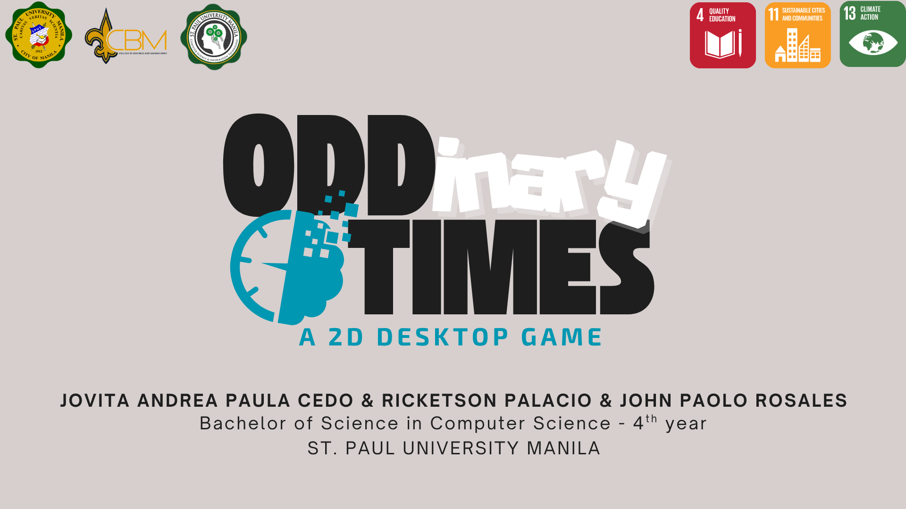

All Projects
A comprehensive showcase of technical expertise and innovation — featuring both solo and collaborative work.

SPU Manila Information Systems
Overview:
Developed an internal QR-based system for monitoring library attendance and ICT equipment
inventory —
streamlining operations and supporting over 1,000 users across the university.

Oddinary Times: A 2D PC Game
Overview:
An interactive educational platform that teaches emergency preparedness and response through
gamification — built using Unity and C# to deliver an engaging learning experience.
INGAT
Overview:
INGAT is a mobile-based solution that
reimagines crime awareness and community safety. It delivers real-time crime mapping and
safety alerts through a user-friendly smartphone interface.
Payo
Overview:
Developed a university-wide appointment scheduling system for the Guidance and Counseling
Office of St. Paul University Manila. The system was tailored to meet institutional
requirements and streamline student appointment management.

SPU - Manila Snake Game
Overview:
This game was showcased during the university’s
Open House event to introduce prospective students to programming through an engaging,
SPU-themed twist on the classic Snake game.
Game Developer: John Paolo Rosales

FB Sign-Up Test Automation
Overview:
Developed an automated testing suite using Python and Selenium to validate Facebook’s
Sign-Up functionality — with special focus on mobile number and password field
validations.Ensures robust form behavior through simulated real-world scenarios.
All images featured are either sourced from the official pages or personally captured by John Rosales.


 Get In Touch
Get In Touch